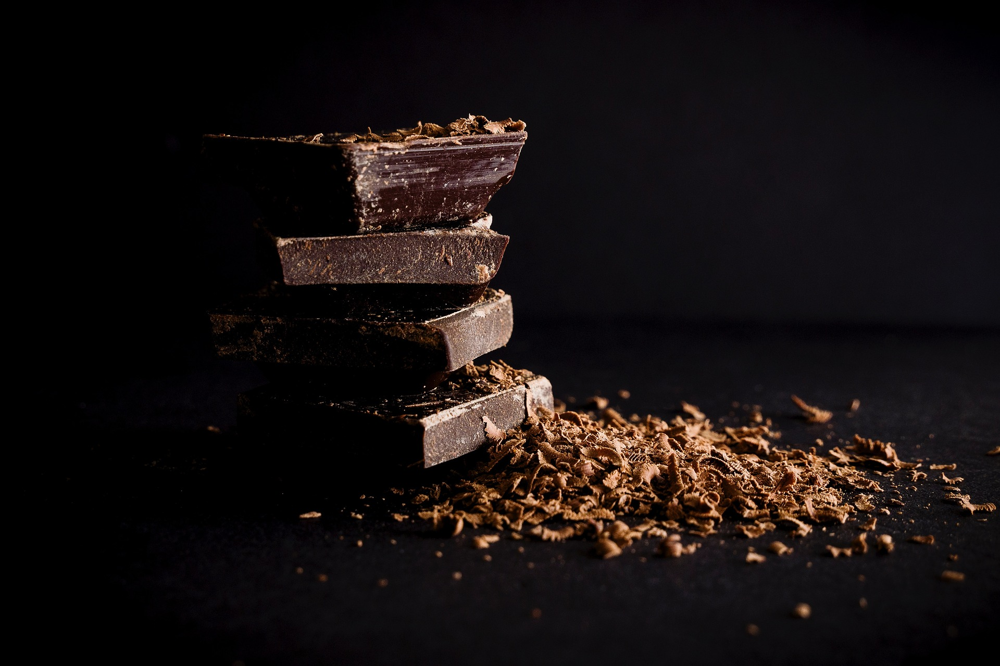

How We Started
Bree Lundy Concepts was started by Bree Lundy in Great Falls, Montana. Where she saw the need for a need in the hospitatlity industry for the knowledge that she had aquired over 28 years in the industry. She brings the knowledge of culinary innovation, wine and beverage integration, food and wine pairing strategies, operational optimizations, menu engineering, staff development, and experience in generally developing the guest experience. She gained these levels of expertise meeting every kind of client working as a consultant, director, manager, chef, bartender, server, beverage specialist, and hospitality team leader. Providing her with an exclusive knowledge of a premium front and back house experience.
How It's Going
Lately, Bree Lundy Concepts has been in Great Falls, making your experiences in town all the more memorable. Helping the businesses in your community to increase their profitability, strengthen service team performance, elevate guest satisfaction, make beverage programs unique, and clarify brand identities. If you're reading this you have untapped potential to become the experience that your clients dream of, and profit with them accordingly.
Let's start that Conversation!